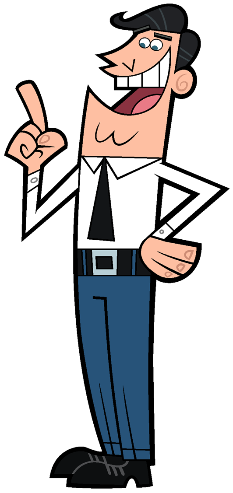

Hello World!
My name is
João Filipe Ventura Coelho
and this would be where I'd put my Portfolio if I had one.
My links and stuff
Here's my
Linkedin
Here's my
Github
Here's my
Codepen
Here's my
itch.io page
Here's a
link to my credit card information
joao-ventura
outlook.com (no spam bots allowed >:c)
Fun Stuff
Challenge me in a Clash of Code at
codingame.com
Challenge me in a CSS Battle at
cssbattle.dev
